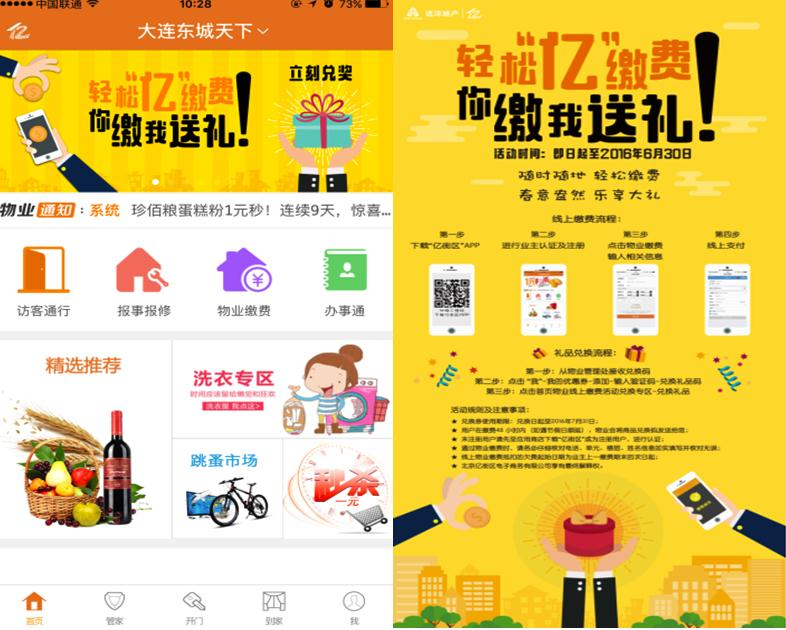
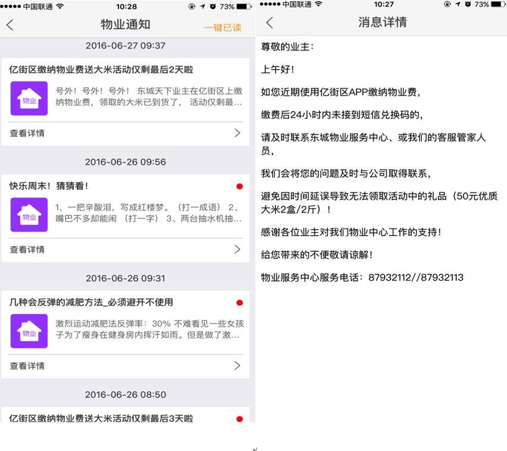
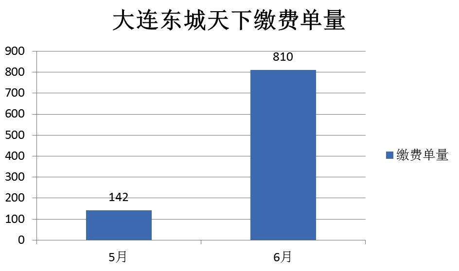
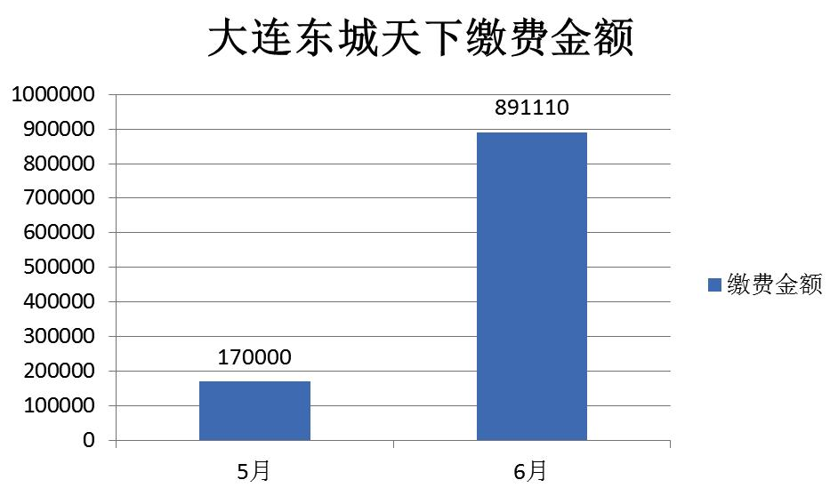

发布时间：2016-08-03 来源： 阅读量： 231
1、业主每次缴费需要去物业服务中心进行刷卡或现金交易，比较麻烦；
2、携带现金有一定的安全隐患。
1、app线上缴物业费，7*24小时在线支付；
2、支付安全、便捷；
3、可举办多样的线上活动与线下联动，让用户通过多种渠道参与；
4、发票送到家（自选）。
1、项目通过前期在社区活动预告、口头传播、张贴海报、拜访易拉宝、微信推文、亿街区PUSH通知等传播方式通知业主，以进行活动预告；
2、活动开始后，亿街区首页轮播图会展现活动的页面，进入到活动页面，有相关活动说明，如该项活动覆盖区域较多，可同步将轮播图通过亿街区后台一起上线；

3、在活动进行期间，大连东城天下通过定期为业主推送PUSH的方式加传播，通知采取将礼品先放在物业或社区中来吸引社区居民关注参与；

4、如遇到年龄较大的用户不会使用手机，物业人员会耐心教业主如何使用，首次缴费由物业管家协助业主进行缴费，待第一次教会后，业主今后就可以在家里自己缴费。相应的兑换礼品也会直接送到家中；
5、管家无需担心业主交费后自己不知道的情况，亿街区可以配置邮件通知、短信通知功能，让管家第一时间得知物业缴费信息。
在活动举办两个月中，仅大连东城天下一个项目线上物业缴费867单，缴费金额92万，全国线上缴费活动期内超过500万，单量逼近3000单。
 
1、项目客服人员节省收费时间，每一笔缴费成功都可以接收到短信通知，及时、便捷；
2、财务人员只需每天核对银联后台账单即可，且每一笔都有明细（包含手续费、清算金额）；
3、如业主通过亿街区缴费后需开发票，物业管家会亲自送上门，该项服务得到了业主的广泛好评。